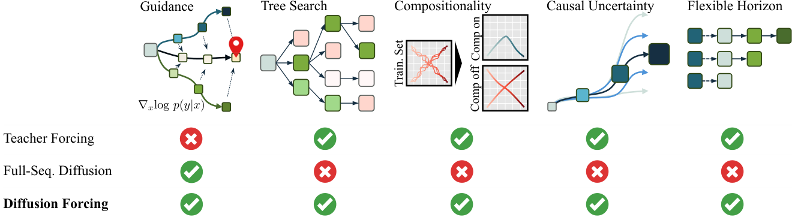
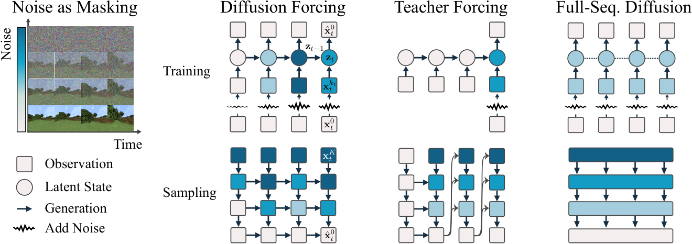
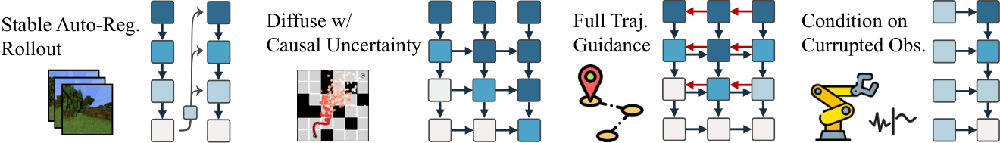
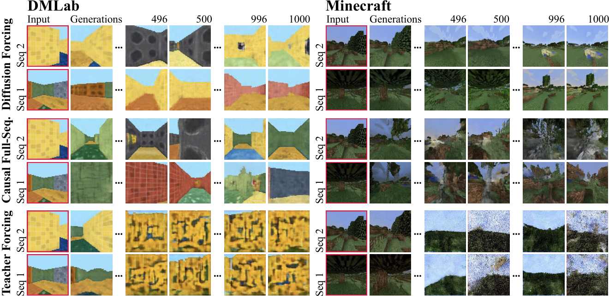
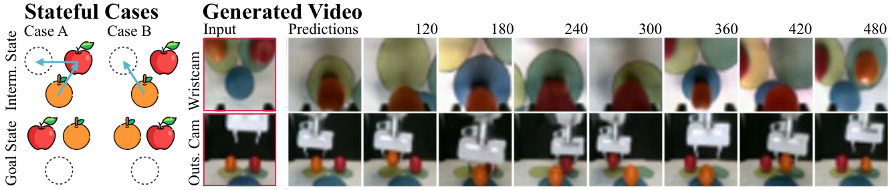
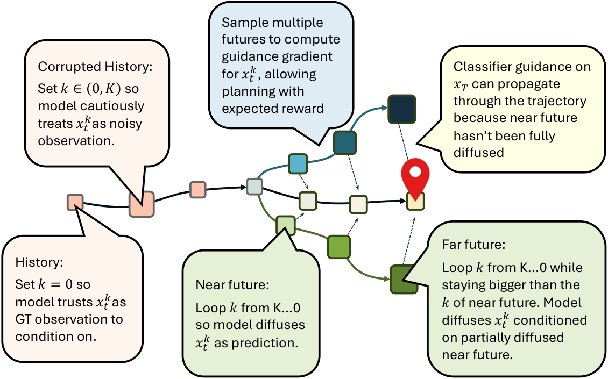

제출: 2024년 7월 1일 (v1) · v2 2024-07-02 · v4 2024-12-10 · RNN 기반 최소 구현
한 줄 요약 (TL;DR)
시퀀스의 토큰마다 독립된 노이즈 레벨을 부여해 학습·샘플링하는 새 확산(diffusion) 훈련 패러다임. 다음-토큰 예측(next-token prediction)의 유연한 가변 길이와 전체-시퀀스 확산(full-sequence diffusion)의 안내(guidance) 능력을 동시에 얻는다. 핵심 관찰은 "노이즈=부분 마스킹"이라는 통일된 시각. 저자들이 Causal Diffusion Forcing (CDF)라 이름 붙인 RNN 인스턴스는 (1) 훈련 지평(training horizon) 36–72 프레임 → 2000+ 프레임 안정 롤아웃, (2) D4RL 미로 6개 환경에서 Diffuser 대비 모두 승(단일 태스크 평균 159.0 vs Diffuser 149.4, 다중 태스크 167.1 vs 152.3), (3) 로봇 과일-교환 모방학습에서 diffusion policy 대비 메모리가 필요한 태스크 80% 성공(diffusion policy 실패), (4) 관측이 심하게 오염돼도 성공률이 80→76%로 4%p만 하락(다음-프레임 확산 기준선은 48%).
1배경 · 문제의식
다음-토큰 예측(next-token prediction)이란 지금까지의 토큰 x1:t를 보고 바로 다음 토큰 xt+1만 예측하도록 학습하는 방식(예: 언어모델, RNN, GPT). 표준 학습법은 teacher forcing — 훈련 시 정답 과거 시퀀스를 그대로 입력으로 넣어 한 스텝 앞만 예측한다. 이 방식은 시퀀스 길이를 자유롭게 늘릴 수 있고(자기회귀 롤아웃), 과거 길이도 유연하며, 트리 탐색이나 온라인 피드백 제어에 잘 맞는다. 그러나 두 가지 결정적 약점이 있다: (i) 이미 뽑힌 토큰이 다음 토큰의 조건이 되므로 미래 목표를 향해 시퀀스를 유도(guidance)할 수단이 없다. (ii) 연속값(픽셀 같은) 데이터에서는 프레임 예측 오차가 누적돼 훈련 지평을 넘기면 발산한다.
대안인 전체-시퀀스 확산(full-sequence diffusion)은 고정 길이 T 토큰을 하나의 큰 벡터로 이어 붙여 그 결합분포(joint distribution)를 확산 모델로 배우는 방식(예: video diffusion, Diffuser). 확산 모델은 데이터에 점점 노이즈를 얹었다가(forward) 다시 벗겨내며(reverse) 샘플하는 생성 모델이다. 이 접근은 목표 지향적 guidance가 자연스럽고(계획, 고보상 궤적 유도) 연속 신호에도 강하다. 대신 (i) 고정 길이·비인과(non-causal) 어텐션을 쓰기 때문에 가변 길이 롤아웃이나 부분 시퀀스 조건화가 어렵고, (ii) 모든 토큰이 같은 노이즈 레벨이라 "이른 시점 불확실성은 낮고, 먼 미래는 불확실성이 커야 한다"는 인과 구조를 표현하지 못한다. 저자들은 두 세계의 장점을 한 모델에 담기 위해 새 패러다임을 제안한다.
2핵심 Contribution
Diffusion Forcing (DF) — 토큰별 독립 노이즈 레벨 확산 훈련. 한 시퀀스 안에서 토큰 t마다 노이즈 레벨 kt를 균일 분포로 독립 샘플링해 동시 학습. 인과 구조를 얹은 인스턴스가 Causal Diffusion Forcing(CDF).
계층적 결정론(SDM) 프레임워크. 같은 모델을 (a) 정책(policy: 즉시 다음 액션 산출), (b) 플래너(planner: 긴 시야로 미래 보상 유도)로 동시에 사용. Monte Carlo Tree Guidance (MCTG)라는 새 유도 방식으로 여러 미래 표본의 보상 기울기를 평균해 유도.
이론적 보장. DF의 학습 목표가 서로 다른 노이즈 레벨 조합 (k1:T)에서 뽑힌 부분 시퀀스들의 로그 우도(log-likelihood)에 대한 ELBO(evidence lower bound, 증거 하한)의 재가중치 최소화임을 증명 (Theorem 3.1).
광범위 실증. 영상 예측(Minecraft, DMLab에서 훈련 지평 넘어 안정 롤아웃), 오프라인 강화학습 계획(D4RL 미로 6종 SOTA), 실로봇 모방(과일-교환, 관측 오염 강건성), 시계열 예측까지 한 모델·한 목적함수로 커버.
3Method
핵심 통찰: "노이즈는 부분 마스킹이다"
마스킹(masking)이란 데이터 일부를 가리고 모델에게 복원시키는 관행(BERT의 [MASK], MAE의 패치 가림 등). 저자들은 노이즈를 더하는 것도 부분 마스킹이라고 본다. 노이즈 레벨 k=0은 마스크 없음, k=K는 순수 백색잡음(완전 마스크)에 대응. 그러면 teacher-forcing 방식의 다음-토큰 학습은 시간 축 마스킹의 특수 경우고, 전체-시퀀스 확산은 모든 토큰에 같은 노이즈 축 마스크를 적용한 특수 경우다. Diffusion Forcing은 이 두 축(시간·노이즈)을 자유롭게 섞은 통합 프레임워크.
왜 이 관점이 힘이 있는가? 훈련 중 토큰별 노이즈 레벨을 독립 샘플하면, 하나의 모델이 (i) 모든 과거가 깨끗한 상태에서 즉시 다음 토큰 예측(kt=0인 과거 + kt+1이 임의), (ii) 부분적으로만 노이즈가 있는 과거로부터 예측, (iii) 완전 잡음 상태에서 새 시퀀스 생성 등 모든 부분 시퀀스 문제를 한꺼번에 배우게 된다.
Causal Diffusion Forcing 아키텍처 (RNN 인스턴스)
가중치 θ를 갖는 RNN이 은닉 상태 zt를 유지. 노이즈 관측 xtkt가 들어오면 zt ~ pθ(zt | zt−1, xtkt, kt)로 갱신. 이는 Bayes 필터의 사후 갱신에 대응하며, kt=0이면 표준 posterior update, kt=K(정보 0)이면 prior transition pθ(zt|zt−1)에 해당한다. 관측 모델 pθ(xt0|zt)는 노이즈 예측 εθ(zt−1, xtkt, kt)로 표현되어 표준 확산 목적함수와 그대로 호환.
학습 알고리즘 (Algorithm 1)
매 스텝: 궤적 (x1,…,xT) 샘플 → 각 t마다 kt ~ Uniform{0,…,K} 독립 샘플 → forward diffuse로 xtkt 만들고 잔차 노이즈 εt 정의 → RNN이 은닉상태 zt와 노이즈 예측 ε̂t 산출 → L = MSE([ε̂1,…,ε̂T], [ε1,…,εT])로 역전파. 특별한 스케줄이나 커리큘럼 없이 표준 확산 MSE 손실만으로 훈련 완료.
샘플링 (Algorithm 2): M×T 스케줄링 행렬 𝒦
샘플링은 2D 격자 𝒦 ∈ [K]M×T로 지시된다. 열 t는 시간 축, 행 m은 노이즈 축(반복 스텝). 𝒦m,t는 반복 m에서 시간 t 토큰이 가져야 할 목표 노이즈 레벨. 모든 토큰을 백색잡음으로 초기화한 뒤 위쪽 행(m=M−1)에서 아래(m=0)로 내려가며 왼→오로 denoise. 마지막 행에 이르면 모든 토큰이 clean(k=0)이 된다. 이 격자 하나만 바꾸면 다음-토큰 예측, 전체-시퀀스 확산, 지그재그(zig-zag), 피라미드(pyramid) 등 어떤 샘플링 방식도 표현 가능.
왜 그리드로 정의하는가? 각 반복에서 서로 다른 시점 토큰이 서로 다른 노이즈 레벨을 가질 수 있음을 명시적으로 표현하기 위해. "가까운 미래는 확신, 먼 미래는 불확실"이라는 인과 구조를 노이즈 레벨의 계단식(zig-zag) 패턴으로 인코딩할 수 있다.
DF만 가능한 새 능력
안정적 자기회귀 롤아웃. 새 토큰을 sampling할 때, 과거 은닉상태 갱신 시 약간의 노이즈(0<k≪K)를 얹은 토큰을 쓰면 발산이 억제된다. 이는 다음-토큰 예측의 오차 누적 문제를 확산의 "노이징으로 스무싱" 능력으로 완화한 것.
불확실한 미래 유지 (zig-zag 스케줄). 첫 토큰을 완전 denoise한 뒤 두 번째만 부분 denoise, 세 번째는 아직 잡음 유지. 앞은 확신·뒤는 불확실이라는 자연스러운 인과 구조를 sampling에 인코딩.
Long-horizon guidance. Algorithm 2의 line 10에서 유도 그래디언트를 부분 확산 궤적에 더한다. DF는 미래를 부분 확산 상태로 두고도 유도 신호가 과거로 역전파되어 인과성을 지키는 장거리 안내가 가능. 다음-토큰 예측은 이 기능이 원천적으로 불가능.
유연한 결정론(Sequential Decision Making)
토큰을 xt = [at(액션), rt(보상), ot+1(관측)]으로 잡고 그대로 Algorithm 1로 훈련. 실행 시 잠재 zt−1로부터 lookahead H 스텝 계획 x̂t:t+H를 샘플, 첫 액션 ât 실행 후 실제 (rt, ot+1) 관측으로 posterior 갱신.
유연한 계획 지평. lookahead H를 짧게 두면 저지연 정책(policy), 길게 두면 장거리 플래너. 재훈련·아키텍처 변경 없이 전환. Diffuser는 전체 궤적 고정, diffusion policy는 짧은 H 고정이라 둘 다 이런 유연성이 없음.
Monte Carlo Tree Guidance (MCTG). 하나의 미래 궤적만 뽑아 유도 그래디언트를 계산하는 대신 여러 미래 표본을 뽑아 그래디언트를 평균. MPPI 같은 shooting method의 정신을 확산 유도에 접목. zig-zag 스케줄과 결합하면 "먼 미래의 큰 불확실성" 위에서 기대 보상을 유도하는 유일한 방법이 된다. 저자들의 이론(Appendix B.3)에 따르면 전체-시퀀스 확산은 기대 보상 최대화 샘플링이 불가능하다.
4실험 결과
4.1 영상 예측 — 안정적 무한 롤아웃 (Minecraft, DMLab)
모두 동일한 convolutional RNN 백본 위에 학습 방식만 바꿔 공정 비교: (a) teacher-forcing 다음-프레임 확산, (b) 인과 전체-시퀀스 확산, (c) Diffusion Forcing. 훈련 지평은 각각 Minecraft 72프레임, DMLab 36프레임. 정성 결과(Figure 3): DF만 훈련 지평을 훨씬 넘어 1000+ 프레임까지 안정 롤아웃. teacher-forcing과 full-sequence 확산 기준선은 빠르게 발산. 훈련 지평 내에서도 full-sequence 확산은 프레임-프레임 불연속(급격한 점프)을 보이는 반면 DF는 일관된 3D 자기이동(ego-motion)을 유지. 프로젝트 페이지에는 학습 지평의 20–30배인 2000+ 프레임 롤아웃 데모.
4.2 D4RL 미로 6종 계획 (Table 1)
2D 미로에서 sparse-reward로 목표 도달. 훈련 데이터는 랜덤 워크(stochastic). 미로별 모델 하나 학습.
지표
MPPI
CQL
IQL
Diffuser* (PD 컨트롤러)
Diffuser (생성 액션 실행)
DF w/o MCTG
DF (Ours)
단일 태스크 평균 보상
—
—
—
141.7
—
116.7 ± 2.0
159.0 ± 2.7
다중 태스크 평균 보상
—
—
—
146.17
119.1 ± 4.0
152.3 ± 9.9
167.1 ± 2.7
* Diffuser는 생성한 액션이 궤적과 자기일관성이 없어 수작업 PD 컨트롤러로 액션을 뒤바꿔야 정상 동작. 표의 별표(*) 열은 그 보정본이며, 별표 없는 Diffuser 열은 생성 액션을 그대로 실행한 결과(급락). DF는 원시 액션을 그대로 실행해도 Diffuser+PD보다 높은 보상. 6개 환경 모두에서 DF 승.
핵심 발견 3가지. (1) MCTG의 이득: 제거하면 116.7→(원본 159.0 대비) 하락, 그래도 competitive. (2) 인과성의 이득: Diffuser의 생성 액션을 그대로 실행하면 성능 급락(119.1) — 액션과 상태가 인과적으로 어긋나기 때문. DF는 원시 액션이 자기일관적. (3) 유연 지평의 이득: 에이전트가 목표에 다가갈수록 지평을 줄여야 하는데, 전체-시퀀스 모델은 이 조정이 어려움.
4.3 구성적(compositional) 생성
모서리→반대편 모서리 X자 궤적 데이터셋. 메모리를 유지하면 X자를 재현, MPC로 짧은 계획+메모리 없이 조합하면 부분 궤적들이 이어져 V자 궤적이 자연스럽게 나온다. 샘플링 스킴만 바꿔 훈련 궤적의 하위 시퀀스를 유연하게 조합 가능.
4.4 실로봇 장거리 모방학습 (Franka + 과일 교환, Figure 4)
사과·오렌지를 세 번째 슬롯을 이용해 교환. 초기 배치가 랜덤이라 메모리 없이는 다음 스텝을 결정 불가한 태스크.
메모리를 갖는 모방학습: DF 80% 성공. 메모리 없는 SOTA인 diffusion policy는 실패.
관측 오염에 대한 강건성: 시각 방해물 추가 및 카메라 완전 가림 상황에서 관측을 "k>0인 잡음"으로 표시하면 DF는 prior 모델에 의존해 계속 작동. 성공률 80%→76%(단 4%p 하락). 반면 다음-프레임 확산 기준선은 48%로 급락.
영상 사전학습 가능성: 같은 모델이 초기 프레임만으로 로봇 수행 영상까지 생성. 모방정책과 영상생성이 하나의 모델·목적으로 통일되어 액션 없는 영상으로 사전학습할 여지.
4.5 시계열 예측
Appendix E: 다변량 확률적 시계열 예측에서 사전 확산 기반 모델[48]과 트랜스포머 기반 모델[49]에 competitive. DF가 도메인 무관 범용 시퀀스 모델임을 시사.
5Ablation (주요 발견)
MCTG 제거: D4RL 미로 단일 태스크 평균 116.7 ± 2.0로 하락(원본 159.0 ± 2.7). 그래도 Diffuser의 보정본(141.7)과 유사 수준 유지.
안정화 노이즈 유무: 자기회귀 롤아웃 시 과거 토큰에 약간의 노이즈(작은 k)를 주면 훈련 지평 초과에서 발산이 억제. 없으면 다음-프레임 확산과 유사하게 몇 프레임 안에 붕괴.
다음-토큰을 full-sequence 확산으로 나이브 결합: 저자들이 명시적으로 실패 케이스로 언급 — 초기 토큰의 작은 불확실성이 후행 토큰의 큰 불확실성을 요구한다는 인과 구조를 모델링하지 못해 생성 품질 나쁨. DF의 토큰별 독립 노이즈 레벨이 이 문제를 해결.
관측 오염: 방해물·카메라 가림 상황에서 노이즈 레벨을 크게 잡아 알림 → DF 80→76%, 다음-프레임 확산 48%.
6핵심 Figure / Table

Figure 1 — Diffusion Forcing capabilities. 언어모델(auto-regressive)·계획(full-sequence diffusion)·영상(full-sequence diffusion) 등 서로 다른 응용이 각각 다음-토큰 예측 또는 전체-시퀀스 확산 중 하나에 의존하는 현 상황을, DF는 두 접근의 핵심 강점을 동시에 제공하는 새 시퀀스 생성 모델임을 도식적으로 보여준다.

Figure 2 — Method Overview. DF는 시간 축과 노이즈 축을 교차해 인과 시퀀스 신경망(RNN 또는 마스크드 트랜스포머)이 각 프레임이 서로 다른 노이즈 레벨을 갖는 가변 길이 시퀀스를 denoise하도록 훈련한다. 대조적으로 next-token prediction(teacher forcing)은 정답 시퀀스에서 다음 토큰 하나만 예측하고, full-sequence diffusion(영상 생성 표준)은 모든 프레임을 같은 노이즈 레벨로 non-causal 하게 한꺼번에 denoise한다.

Sampling Schemes. M×T 노이즈 스케줄링 행렬 𝒦로 표현되는 DF의 샘플링 격자. 각 열=시간, 각 행=denoising step. 한 격자만 바꾸면 next-token, full-sequence, 지그재그(먼 미래 더 노이즈 큼) 등 어떤 방식도 표현 가능. 지그재그는 인과적 불확실성을 명시적으로 인코딩해 planning과 MCTG를 가능케 한다.

Figure 3 — Video Generation. DMLab·Minecraft에서 훈련 지평을 훨씬 넘긴 롤아웃. DF만 시간적 일관성(consistency)이 유지되며 발산하지 않음. teacher-forcing과 full-sequence 확산 기준선은 훈련 지평 근처에서 붕괴하거나 프레임-프레임 점프를 보인다.

Figure 4 — 실로봇 과일 교환 태스크. (a)(b) 상단 관측은 동일하지만 초기 배치에 따라 목표가 달라지므로 초기 구성 기억이 필수. (c) 같은 모델이 단일 초기 프레임에서 로봇 수행 영상까지 합성. DF는 액션 생성과 영상 생성을 한 프레임워크로 통일한다.

Figure 5 (부록) — 시퀀스 관점에서의 능력 비교. teacher-forcing autoregressive, full-sequence diffusion, DF 각각의 훈련·샘플링 도식과 인과 구조·유도(guidance) 지원 여부 비교.
Table 1 (Planning) — 원문 요지: "DF는 각 시점을 서로 다른 노이즈 스케줄로 denoise할 수 있어 유도(guidance) 계획 중 인과적 불확실성을 반영할 수 있다. DF는 먼 미래를 가까운 미래보다 더 불확실하게 유지하는 반면 Diffuser는 동일 노이즈 레벨. 정량적으로 DF는 실행 평균 보상 최고." (단일 태스크 159.0, 다중 태스크 167.1)